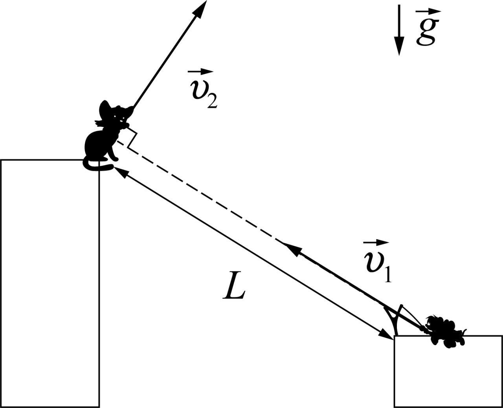
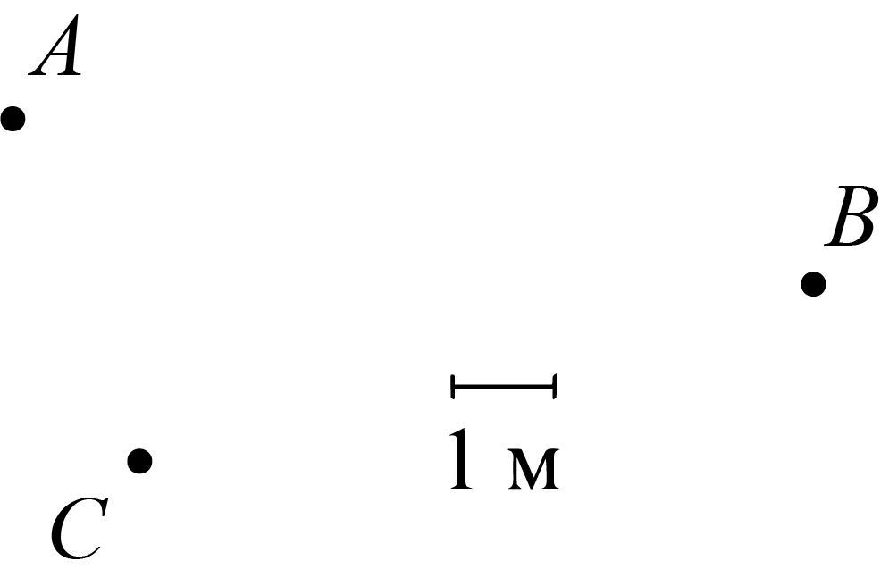

W21 (2021) — English translation
Seeing Leopold standing on the high edge of the ravine from the opposite bank, the mice threw a stone straight at him at a speed of $v_1$. Leopold noticed this and, at the moment of the throw, jumped with a speed of $v_2$ in the plane of the stone’s flight path perpendicular to the line connecting it with the mice (see figure). When the distance between Leopold and the stone became minimal, their speeds were again perpendicular.

When the distance between Leopold and the stone became minimal, Leopold, the mice and the stone were photographed. The initial distance between the mice and Leopold was the maximum possible. In the figure, the point $A$ denotes the position of Leopold, $B$ the position of the mice, $C$ the stone at the time of the photograph. The orientation of the photo is unknown. You can use a graduated ruler.

Source: https://pho.rs/p/69